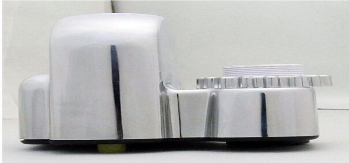

自动节水器
自动节水器是一种安装很简便，性价比极高的管道节水器。可以用于淋浴龙头和及各类普通水龙头，通用性极强，不需要更换现有的淋浴喷头和水管，直接加装在淋浴花洒下与软管的连接处或上水管处，都可以达到很好的节水效果，长度仅0.5cm。材质有abs工程塑料和金属两种，安装简单，时间不到一分钟。在不影响正常用水的情况下，有效节水至少达到35%，还可按不同人群的不同用水要求提供不同节水率的产品，是节约动态水流的经典产品

水龙头节水器最适合单把冷热水龙头的节水改造，由于冷热水龙头分冷水和热水双路供水，双路水压相差较大，调节时既调温双要调水量，两者很难配合，使调温时间过长，造成严重浪费。在单把水龙头安装 恒流节水器后，由于恒流的原因，不用节调流量，只调温度就可以了，大大缩短了调温时间，减少调温时的流量损失，节约用水。 节水器包含沟槽中的大小便器，专用于带沟槽式的卫生间中（大便槽带自动水箱，小便槽无需带水箱），通过红外线感应来达到节水目的的产品，在水资源日益缺乏的地球，更加应该被普遍使用和重视！普通的沟槽式水冲公厕，都是由一个自动水箱来进行冲洗的，小便槽冲洗则是通过PVC水管钻多个小孔长流水。最常见的是虹吸式水箱，它的工作原理是：将自来水不断的注入水箱内，水面不断上升，当水面淹没虹吸管时，产生虹吸现象，水箱开始放水，当水面下降低于虹吸管的进水口时，停止放水，完成了一个循环周期。普通沟槽式冲洗公厕都是24小时不间断的冲洗，造成水资源的极端浪费。厕所节水器可有人使用，机器才按指令工作，往水箱注满水才会自动冲洗，无人使用，机器则“按兵不动”，有效达到智能化节水。 一、节水器由红外线热敏探测器、微电脑程控器、低压直流电磁阀组成，它的工作原理是通过红外线人体感应来完成工作的，当有人在探测器前活动，探测器立即红色灯光闪烁，表示已经感应到人，同时探测器将感应信号传送给微电脑程控器，由控制器控制电磁阀打开放水，注水时间可以自由调节。来人放水，无人停水，特别适用于学校、机关、商场、工厂等单位的沟槽式厕所，节水效率高，安全省电。人体红外线感应100%识别，可以识别不同颜色、不同材质的物体（衣物），漏冲率为零。 二、在保证电压、水压正常的情况下，一般不需要维修。